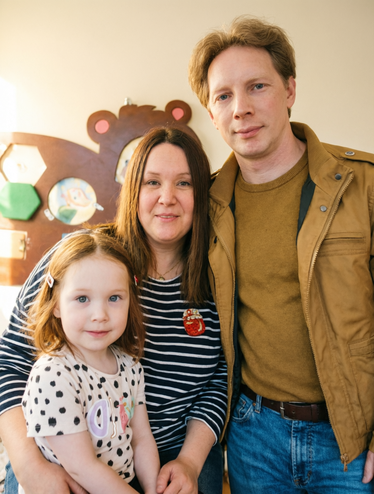

Обо мне
...
Обо мне
Здравствуйте. Меня зовут Евгений Александров. Я помогаю бизнесу побеждать в тендерах и исполнять контракты, предлагая не просто юридическое сопровождение, а комплексное решение бизнес-задач.
Моя работа — это системный подход: от поиска и анализа подходящих контрактов (44-ФЗ, 223-ФЗ, коммерческие закупки) до их успешного исполнения и получения оплаты. Я глубоко разбираюсь в тонкостях законодательства, знаю, как правильно оформить заявку, чтобы её не отклонили, и как эффективно использовать банковские гарантии.
Моя личная история — это моя главная экспертиза. Я женат на Наталье. Она — творческий человек: создаёт украшения из камней, пишет сценарии и ставит спектакли. Недавно она открыла в Перми представительство международного холдинга Fohow.